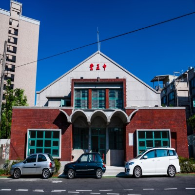

八德舊 | 觀音白沙岬燈塔 |
|
桃園，位於台灣北部，歷史悠久，是文化與產業交融的城市。早在清朝時期，這裡以農業發展為主，河川與山林孕育了豐富的自然資源，也孕育了在地的客家與閩南文化。日治時期，桃園逐漸發展交通與工業基礎，現代的桃園因為國際機場與工業園區而成為台灣重要的門戶城市。從古樸的聚落到現代化都市，桃園承載著豐富的歷史記憶，也展現了台灣從傳統到現代的轉變。 |
|
| 八德舊稱「八塊厝」，18世紀清乾隆初期原有八戶人家的閩、客移民到此居住下來，分別有謝、蕭、邱、呂、賴、黃、吳、李等八姓，每姓各築一屋，故得「八塊厝」之名。 平鎮以前曾稱「廣興」，1744年（清乾隆9年）廣東嘉應州客屬移民宋姓與戴姓二族進入開墾，開拓荒埔有成後，因是廣東移民興業，故稱「廣興庄」。所以現在市內仍存有廣興里地名。 新屋地名，源自於漢語族移民拓墾初期，常遇到平埔族人出草，乃放棄原來住屋另謀此地建築新屋；另一說法，廣東惠州府陸豐縣移民范集景與妻雷氏生一子，名范文質。范集景早死，其妻攜孤子范文質改嫁姜同英。范文質成年後娶妻生五子，五子為感念姜同英養育其父之恩，均將其姓冠以二姓，成為「范姜」複姓。1751年（乾隆16年）范姜五兄弟前來本鄉開墾。1854（咸豐5年）范姜家族興建規模宏大之祖堂，鄉人指為「起新屋」。 |  |
|
白沙岬燈塔位於觀音海岸，在台南國聖燈塔未興建前，曾是台灣本島最西邊的燈塔，週邊設有環形步道，還可順遊觀音濱海遊憩區。白沙岬雪白的塔身在蔚藍海天之間顯得更為耀眼，西元1901年點燈啟用後，在日治時期就已是台灣著名勝景，歷經百年以上的歲月洗禮，在2001年獲選入列文建會「台灣歷史建築百景」，燈塔建築本體、圍牆與日治時期的日晷儀隔年公告成為桃園第一座縣定古蹟，2021年5月公告為桃園第二座國定古蹟，是目前保存最完整的日治初期燈塔。 |
|